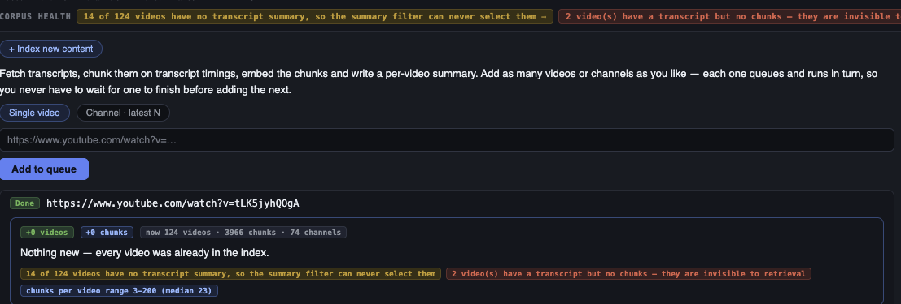
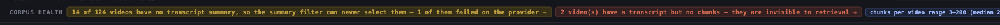
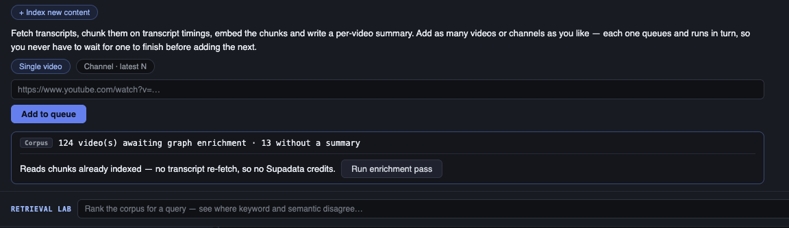
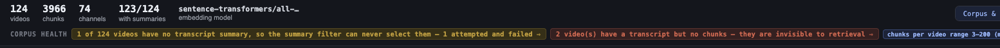
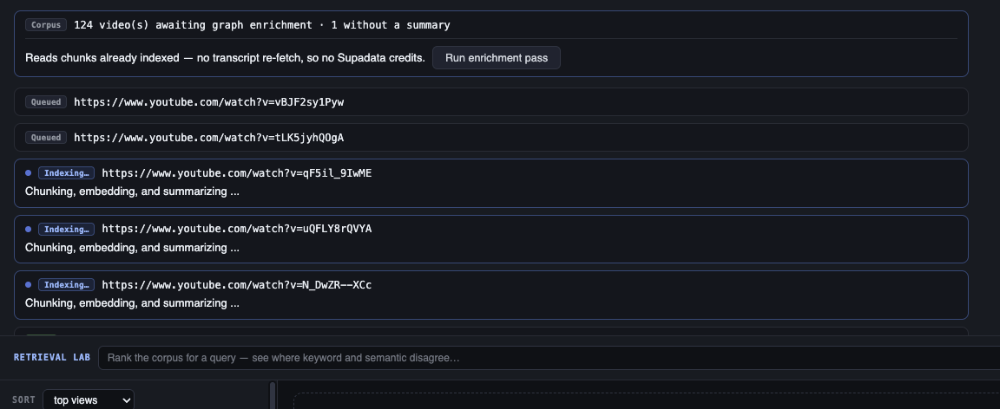
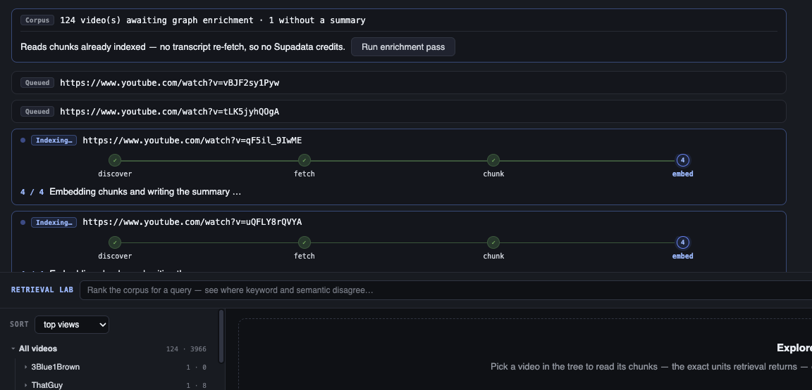
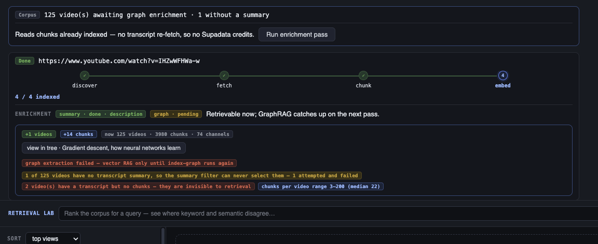

Four videos in your queue read Indexing failed (exit 1). The cause was a DeepSeek balance of −$0.09, but the defect was that a summary provider could fail an index whose transcript and chunks were already committed. All eight steps are built, tested and validated in the running app — each one against the real broken provider, which never got topped up.
The proof that the design is right: everything below was validated while the provider that caused the incident was still broken. A brand-new video indexed end‑to‑end, with a summary, during this build — see §08.
| Before | After | |
|---|---|---|
| A 402 during indexing | exit 1 job failed, chunks silently kept | exit 0 job Done, degradation named |
| Videos without a summary | 14 of 124 | 1 of 125 (and it is named) |
| Summary source | DeepSeek LLM — tokens, and a provider that can fail | YouTube description — already fetched, free, no LLM |
| "Pending" vs "failed" | indistinguishable — inferred from summary is None |
recorded explicitly on the document |
| Concurrent index jobs | 1 | 3 (configurable) |
| Progress reporting | 3 stages announced before any work, then one opaque block | 4 stages, each fired as it actually begins |
| Retry cost | re-fetched the transcript — 1 Supadata credit per failed retry | nothing to retry; enrichment reads what is already stored |
RagIndexer.index() commits the transcript and chunks, then generates a summary.
A 402 in that last step propagated all the way to cli.py's top-level handler and
returned exit 1 — for a video that was, by then, fully retrievable. The result now
carries the failure instead of raising it.
removed = self.chunk_store.replace_chunks(raw_document.video_id, chunks)
summary_status = None
if self.summary_store is not None and self.summary_generator is not None:
_summary, summary_status = self.summary_store.ensure_summary(
raw_document,
self.summary_generator,
refresh=refresh_summary,
chunk_count=len(chunks),
)
refreshed = self.raw_store.get_raw_document(raw_document.video_id)
if refreshed is not None:
raw_document = refreshed removed = self.chunk_store.replace_chunks(raw_document.video_id, chunks)
# ── the core index is complete and durable from here ──────────────
# Everything below is enrichment. It reports failure; it never raises.
summary_status = None
summary_error = None
if self.summary_store is not None and self.summary_generator is not None:
try:
_summary, summary_status = self.summary_store.ensure_summary(
raw_document,
self.summary_generator,
refresh=refresh_summary,
chunk_count=len(chunks),
)
except Exception as exc:
summary_status = FAILED
summary_error = str(exc)
logger.warning(
"summary generation failed for %s — indexed without one: %s",
raw_document.video_id,
exc,
)
# Persist the failure. An unrecorded one is indistinguishable
# from "nobody has tried yet", and the repair pass has to be
# able to find these.
raw_document = raw_document.model_copy(update={"summary_status": FAILED})
self.raw_store.upsert_raw_document(raw_document)
else:
refreshed = self.raw_store.get_raw_document(raw_document.video_id)
if refreshed is not None:
raw_document = refreshedThe precedent was already in the codebase: ingestion_queue.py had treated a
failed graph extraction as non-fatal since it was written. Summaries were simply
never given the same treatment — two enrichment steps, two opposite policies, in the
same pipeline.
$ .venv/bin/python -m src.cli index-rag "https://www.youtube.com/watch?v=tLK5jyhQOgA"
EXIT CODE = 0
RAG index updated
Chunks: 26
Summary: failed
Summary error: Error code: 402 - {'error': {'message': 'Insufficient Balance', ...}}

tLK5jyhQOgA — one
of the four rows from your screenshot — now completes. Same provider, same balance.
"This video has no summary" used to be read off summary is None, which cannot
tell a video nobody has summarised yet from one whose provider lost the attempt. Repairing
the second requires finding it first. Three fields now record it, with a fallback so
everything indexed before they existed still reads correctly.
summary_status: str | None = None # pending | done | failed
summary_source: str | None = None # description | llm
graph_status: str | None = None # pending | done | failed
def summary_state(document: RawTranscriptDocument) -> str:
"""Tolerant of pre-field documents: a stored summary means it succeeded,
its absence means nothing has produced one yet. Only `failed` is genuinely
new information — which is exactly why the field had to exist."""
if document.summary_status:
return document.summary_status
return DONE if (document.summary or "").strip() else PENDING

Supadata returns description in the same /v1/metadata call the
fetch step already makes. Using it removes the LLM from indexing altogether — the
change that makes this failure class structurally impossible rather than merely survivable.
class DescriptionSummaryGenerator:
"""Uses the creator's own YouTube description as the summary. No LLM.
Supadata returns ``description`` in the same ``/v1/metadata`` call the
fetch step already makes, so this costs nothing — no tokens, no extra
credit, no provider that can be out of balance. That is the point: it
takes the LLM out of the indexing path entirely, which is what made the
402 incident possible in the first place.
The tradeoff is real and worth naming: a description is what the creator
wrote to make you *click*, while an LLM summary is derived from what was
actually *said*. Expect topic routing to hold up and specific-claim
routing to suffer. ``eval-ablation`` measures which.
Descriptions too thin to route on raise, so the video is recorded with
``summary_status="failed"`` and shows up as work to do — rather than
quietly poisoning the router with a line of marketing copy.
"""
source = "description"
model_name = "youtube-description"
def __init__(self, min_chars: int = 120) -> None:
self.min_chars = min_chars
def summarize(self, raw_document: RawTranscriptDocument) -> str:
body = clean_description(raw_document.description or "")
title = (raw_document.title or "").strip()
# The title is the single most routable line a video has, and it is
# always present — so it leads, and it counts toward the threshold.
summary = f"{title}. {body}".strip(". ").strip() if title else body
if len(summary) < self.min_chars:
raise ValueError(
f"YouTube description is too thin to route on "
f"({len(summary)} chars, need {self.min_chars}) — "
f"nothing but links, timestamps or a call to action"
)
return summary
Too thin to route on raises, deliberately. A description that cleans down to "Work with me:" would otherwise become that video's routing signal. Failing is the better outcome: the router is better off not selecting a video than selecting it for the wrong reason — and §02 means the failure is recorded rather than lost.
YT_AGENT_SUMMARY_SOURCE=llm restores the DeepSeek
summariser; the default is description.
I told you to expect descriptions to route worse: marketing copy versus prose derived from what was actually said. The data does not support that. Both arms embedded from text already on disk, scored on the same golden questions, no LLM and no judge — which matters, because the judge is the provider that was down.
| Summary source | recall@1 | recall@3 | recall@5 | mean rank |
|---|---|---|---|---|
| LLM summary (DeepSeek) | 0.500 | 0.786 | 0.857 | 2.86 |
| YouTube description | 0.500 | 0.857 | 0.857 | 2.93 |
Read this as "indistinguishable", not "better". Only 14 golden questions have an expected video inside the 109-video comparable set, so one question flipping moves recall@3 by 0.071. The honest conclusion is that switching source cost nothing measurable — not that descriptions win.
Recorded state the UI never shows is the same as silent state. Each finished job now carries an enrichment line, and the corpus backlog became the button that clears it. Enrichment runs as an ordinary queue job so it shares the same workers, broadcasting and failure isolation rather than inventing a second execution path.
GET /api/enrichment → what still needs enriching corpus-wide POST /api/enrichment/run → queues a graph catch-up job (video_ids?, limit?)

index-summariesYour call in the review: one consistent source rather than a corpus mixing LLM prose with marketing copy in a single embedding space. Free and local — the descriptions were already on disk, so this is a re-embed, not a re-fetch.
$ .venv/bin/python -m src.cli index-summaries --refresh
Transcript summaries
Source: description (youtube-description)
Videos considered: 124
Written: 123
Already current: 0
Failed: 1
- Cu8kUBwLoTM: YouTube description is too thin to route on (104 chars,
need 120) — nothing but links, timestamps or a call to action
I backed the 111 existing LLM summaries up to
.yt-agent/llm-summaries-backup.json first. You did not ask me to keep them, but
overwriting real work product irreversibly when the backup costs nothing was not a trade worth
making.

Two things are shared the moment more than one job runs: the Chroma collections every job writes, and the single dashboard HTML file every job rewrites when it finishes.
#: One lock per (chroma path, collection), shared by every store instance in
#: the process.
#:
#: Per-instance locking would not help: the ingestion queue runs each job
#: through ``cli.main(argv)`` in-process, and every job constructs its own
#: stores. Two concurrent jobs therefore hold two different objects pointing at
#: the same collection on disk. Keying the lock by what is actually shared —
#: the collection — is what makes concurrent workers safe.
#:
#: Writes are milliseconds against network calls measured in seconds, so
#: serialising them costs effectively nothing.
_write_locks: dict[tuple[str, str], threading.Lock] = defaultdict(threading.Lock)
_write_locks_guard = threading.Lock()
def collection_write_lock(path: Path | str, collection_name: str) -> threading.Lock:
"""The process-wide write lock for one Chroma collection."""
key = (str(Path(path).resolve()), collection_name)
with _write_locks_guard:
return _write_locks[key]
The dashboard is now written to a temp file and moved into place with
os.replace. Two concurrent renders can no longer interleave into invalid HTML
that neither run notices, and last-writer-wins is the correct outcome — both render
the same collections, so the later one is more current.
The single worker was never a technical constraint — the queue's own docstring
justified it by citing bulk-index's --concurrency 1 guard, which
existed because nobody had removed it. Indexing is almost entirely network wait, so one
worker left that latency completely unhidden.
self.max_workers = max(1, max_workers)
self._workers = [
threading.Thread(target=self._run, daemon=True, name=f"ingestion-queue-{index}")
for index in range(self.max_workers)
]
for worker in self._workers:
worker.start()
With one worker, "everything that appeared while I ran" was an exact description of what a job added. With three, a job's before/after window overlaps its neighbours' and the naive difference happily reports another job's video as its own.
def _attribute_added(
self,
job: IngestionJob,
before_ids: set[str],
after_videos: list[dict[str, Any]],
) -> list[dict[str, Any]]:
"""Which of the new videos belong to *this* job.
With one worker, "everything that appeared while I ran" was exact.
With several, a job's before/after window overlaps its neighbours', so
the naive difference happily reports another job's video as its own.
Two rules, in order:
* A single-video job knows precisely which video it was for — its own
target URL — so it claims that one and nothing else.
* A channel job cannot know without re-reading the CLI's run record,
so it claims whatever is new and unclaimed. First finisher wins.
That can misattribute a video *between* two concurrent channel runs,
but it can never double-count one, and the corpus totals stay right.
"""
fresh = [v for v in after_videos if v["video_id"] not in before_ids]
with self._lock:
target = _video_id_in(job.target) if job.mode == "video" else None
unclaimed = [v for v in fresh if v["video_id"] not in self._attributed]
if target is not None:
claimed = [v for v in unclaimed if v["video_id"] == target]
else:
# Either a channel job, or a single-video target this could not
# parse. Falling back to "everything unclaimed" keeps a job
# that cannot identify itself reporting *something* true,
# rather than silently reporting nothing.
claimed = unclaimed
self._attributed.update(v["video_id"] for v in claimed)
return claimed

The old stages were theatre: discover, fetch and
processing were announced in three consecutive statements with no work between
them, and then the entire index ran inside one opaque call. A stepper built on that would
jump to 3/6 and freeze. The queue drives indexing through cli.main(argv), which
returns an exit code and nothing else, so progress needed a channel.
CORE_STAGES: tuple[str, ...] = ("discover", "fetch", "chunk", "embed")
StageReporter = Callable[[str], None]
_reporter: ContextVar[StageReporter | None] = ContextVar("stage_reporter", default=None)
@contextmanager
def stage_reporter(reporter: StageReporter | None) -> Iterator[None]:
"""Install ``reporter`` for this context, restoring the previous one after."""
token = _reporter.set(reporter)
try:
yield
finally:
_reporter.reset(token)
def report_stage(stage: str) -> None:
"""Announce that ``stage`` has begun. A no-op when nothing is listening.
Never raises: progress reporting must not be able to fail an index. That
is the same rule the enrichment steps follow, for the same reason.
"""
reporter = _reporter.get()
if reporter is None:
return
try:
reporter(stage)
except Exception: # pragma: no cover - defensive
pass
A ContextVar rather than a global, so three concurrent workers cannot report
into each other's jobs — and installed inside the callable that
_run_blocking runs, because a new thread does not inherit its caller's context.
A reporter that raises is swallowed: progress reporting must never be able to fail the thing
it reports on.


upsert merges metadataIt does not replace it. A key omitted from the new metadata keeps its old value forever — which means the codebase's "write only if not None" pattern can never unset a field. I only found it because the first corpus rewrite left one video carrying a DeepSeek summary while every other video had a description, and my own mixed-source warning failed to notice.
if document.summary is not None:
metadata["summary"] = document.summary
if document.summary_model is not None:
metadata["summary_model"] = document.summary_model
if document.summary_generated_at is not None:
metadata["summary_generated_at"] = document.summary_generated_at # Written unconditionally, as ``""`` when unset, because Chroma's upsert
# *merges* metadata rather than replacing it: a key left out of the new
# dict keeps its old value forever. Every other clearable field here
# (title, language) already uses the same ``or ""`` convention, and
# ``_none_if_empty`` turns it back into None on read.
#
# This matters for real: clearing a stale summary — the case where a
# rewrite to a new source fails and the previous generator's text must not
# be left behind — is impossible with a conditional write.
metadata["summary"] = document.summary or ""
metadata["summary_model"] = document.summary_model or ""
metadata["summary_generated_at"] = document.summary_generated_at or ""
metadata["summary_embedding_model"] = document.summary_embedding_model or ""
metadata["summary_embedded_at"] = document.summary_embedded_at or ""Verified directly rather than assumed:
col.upsert(ids=['a'], metadatas=[{'keep':'1','drop':'2'}])
col.upsert(ids=['a'], metadatas=[{'keep':'1'}])
→ {'keep': '1', 'drop': '2'} # "drop" survives
When the new source can't produce a summary, keeping the old one from a different generator is the worst outcome: the corpus claims one consistent source while that video routes on another's prose. It is now dropped, so the video is honestly unrouted.
For an ingest a failed graph is a footnote — the vector index already succeeded. For an enrichment job the graph is the job, so the same result had to read as a failure. It now says which chunks failed, and that the corpus is unharmed.
tempfile creates at 0600, so the dashboard silently went from
world-readable to owner-only. Restored to the umask-derived mode a plain write would have
produced.
Two existing tests were quietly order-dependent. One asserted jobs
complete in submission order, another mapped a fixed list of exit codes onto jobs by
arrival — both fine with one worker, both racy with three. Rather than delete them I
pinned each to max_workers=1, since serial ordering is genuinely what they
test, and added separate tests for the pool's real invariants: every job runs exactly once,
and completion order is not promised.
| New test file | What it pins down |
|---|---|
| tests/rag/test_indexing_enrichment.py | A 402 degrades an index instead of failing it; the failure is persisted, not just returned; clearing a summary actually clears it |
| tests/rag/test_description_summaries.py | Links, timestamps and handles are stripped; the title leads; a description too thin to route on raises; no LLM client exists on the path |
| tests/rag/test_progress.py | Stages fire in order as work begins; chunk is not reported before the
transcript exists; concurrent jobs do not report into each other; a broken
reporter cannot fail an index |
| tests/rag/test_concurrent_writes.py | One lock per collection across instances; ten simultaneous videos all survive; a reader never sees a half-written dashboard |
| tests/evals/test_summary_source.py | Only videos with both texts are comparable; thin descriptions are counted, not dropped; a summary that misses the topic ranks below one that hits it |
| tests/api/test_ingestion_queue.py (extended) | Enrichment jobs index nothing and isolate failure; jobs genuinely overlap; a misconfigured pool still gets one worker; no video is ever claimed twice |
| frontend IndexPanel.test.tsx (extended) | A queued job shows no stage; a failed run marks the stage it died on; done reads 4/4 whatever the last event carried; an enrichment job gets no stepper |
qcH_-leTt7Q and aircAruvnKk still have a transcript and no
chunks, so they remain invisible to retrieval and are still counted in the corpus total.
It was outside the steps 1–8 you approved, and you left question 4 unanswered.
All of it is uncommitted on injest-exploration, alongside the working-tree
changes that were already there. Say the word and I will stage the coherent set and write
the commits.
125 videos await graph enrichment, and it is the one step that still needs DeepSeek. It fails safely and the button is there; it will work whenever you top up. The graph extraction failures you will see in the log are expected, not new.
Everything here is local. The deployed demo still runs the previous build, and the PostHog key is still pending from the earlier session.
Correction on Supadata credits. I first wrote that one credit was spent
and your balance should read 233. The live account now reads 105 used, 195
left. The one credit figure was about the single genuinely new video indexed for
§08 — every other validation reused stored transcripts, since the queue runs
index-rag <url> without --refresh and therefore does not
re-fetch.
What I cannot stand behind is the 233: I never re-read the balance at the start of this build, so I was subtracting from a figure taken on 24 Aug — before the corpus grew from 112 to 124 videos this morning, and before the failed attempts in your screenshot, which bill whether or not they succeed. The delta is real spend; I just have no basis for attributing it. Treat 195 as the number and the earlier one as unmeasured.
Design source (2): the project's own system — tokens from frontend/src/theme.css. Every screenshot is the running app on localhost:8011; every code block is read from the working tree.